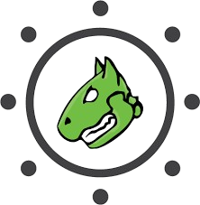
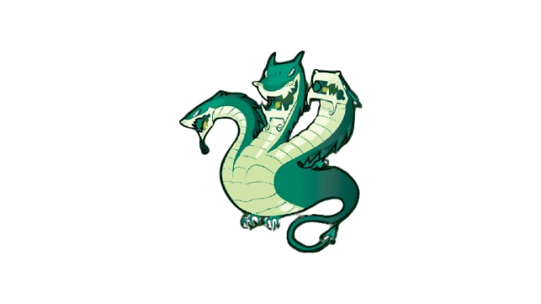

Introdução
A cibersegurança é a área responsável por proteger sistemas, redes, servidores e dados contra acessos indevidos, ataques e danos. Ela é essencial em um mundo cada vez mais digital, em que quase tudo depende da tecnologia e da troca de informações online.
Seu papel vai além de evitar invasões: envolve também criar estratégias e boas práticas para manter a integridade, a confidencialidade e a disponibilidade dos dados. Com o avanço da internet e o aumento dos crimes virtuais, a cibersegurança se tornou um pilar fundamental para empresas, governos e usuários comuns.
O que torna a cibersegurança essencial?
A importância da cibersegurança vem do fato de que vivemos totalmente conectados. Hoje, uma simples ação — como clicar em um link suspeito ou postar informações pessoais — pode expor dados valiosos. Por isso, é uma área que exige atualização constante, atenção e adaptação às novas ameaças que surgem todos os dias. A tecnologia evolui rápido, e com ela, os riscos também. Sem proteção digital, tanto indivíduos quanto organizações ficam vulneráveis a golpes, roubos e invasões.
Vírus
Os vírus de computador são programas criados para causar danos, roubar dados ou comprometer sistemas. Eles fazem parte de uma categoria maior chamada malware, que inclui várias ameaças.
O primeiro vírus, chamado Brain, surgiu em 1986, criado por dois irmãos para punir quem pirateava seus softwares, infectando disquetes e se espalhando por cópias. Desde então, o malware evoluiu e se tornou um grande problema de segurança digital.
Principais tipos de malware:
- Worms: se espalham automaticamente por redes.
- Adware: exibe anúncios e coleta informações.
- Spyware: espiona as atividades do usuário.
- Ransomware: bloqueia arquivos e pede pagamento.
- Bots/Botnets: controlam vários PCs remotamente.
- Rootkits: dão acesso secreto a hackers.
- Cavalos de Troia: fingem ser programas legítimos.
- Bugs - falhas de software que podem abrir brechas de segurança (não são malware em si).
Ao longo da história, vírus evoluíram rapidamente:
- 1971: primeiro vírus (Creeper).
- 1983: termo “vírus de computador” é criado.
- 1988: Worm Morris causa o primeiro grande ataque.
- Anos 1990–2000: aumento dos antivírus e dos ataques.
- 2000 em diante: surgem ataques em larga escala como DDoS, afetando grandes empresas e sites.
Hackers
O termo hacker se refere a quem entende profundamente de sistemas e redes. Nem todos são criminosos — alguns trabalham justamente para impedir ataques.

- Black Hat: hackers maliciosos que roubam dados.
- White Hat: éticos, contratados para proteger sistemas.
- Gray Hat: agem sem permissão, mas sem más intenções claras.
- Red Hat: caçam e combatem hackers criminosos.
- Green Hat: iniciantes que ainda aprendem.
- Hacktivistas: atacam por motivos políticos ou sociais, como o grupo Anonymous.
Os hackers mostram que a segurança digital não é apenas técnica — envolve também ética, responsabilidade e intenção.
Ferramentas

OpenVAS
Ferramenta de código aberto que faz varreduras automáticas para detectar vulnerabilidades em sistemas e redes. Gera relatórios que ajudam a corrigir falhas e reforçar a segurança de servidores.

Hydra
Usada para testar a força de senhas e autenticações por meio de tentativas automatizadas de login. Identifica credenciais fracas e deve ser usada apenas com autorização.
Nmap
Mapeia redes para identificar dispositivos ativos, portas abertas e serviços em execução. Ajuda a detectar brechas e monitorar a segurança da infraestrutura.
Burp Suite
Analisa o tráfego entre o navegador e o servidor para encontrar falhas em aplicações web. É muito usada em auditorias e testes de penetração online.
Casos reais
Grandes incidentes de cibersegurança mostram como o tema é atual e importante:
- Vazamento de 2025 (Google, Apple, Meta): mais de 16 bilhões de senhas foram expostas por ataques de phishing e malwares.
- Insomniac Games (2023): hackers roubaram 1 TB de dados, incluindo informações de funcionários e contratos com a Marvel.
- Nintendo Gigaleak (2020): milhares de arquivos e protótipos de jogos clássicos foram vazados, revelando conteúdos sigilosos da empresa.
Esses casos mostram como até grandes corporações podem ser vítimas, reforçando a necessidade de segurança digital em todos os níveis.
Formas de Prevenção
Manter a cibersegurança depende de boas ferramentas e hábitos conscientes. A melhor defesa é unir tecnologia, atenção e informação.
- Use antivírus confiáveis: Kaspersky, Bitdefender, Avast, AVG, Windows Defender e McAfee ajudam a detectar ameaças e devem ser mantidos atualizados.
- Atualize o sistema e os programas: correções impedem que invasores explorem falhas antigas.
- Cuidado com links e downloads suspeitos: desconfie de mensagens ou sites duvidosos.
- Crie senhas fortes e únicas: use combinações variadas e, se possível, ative a verificação em duas etapas.
- Faça backups regulares: mantenha cópias em nuvem ou em HD externo para evitar perda de dados.
- Evite redes públicas: Wi-Fi aberto pode expor suas informações.
- Pratique consciência digital: comportamento atento é a base da segurança online.